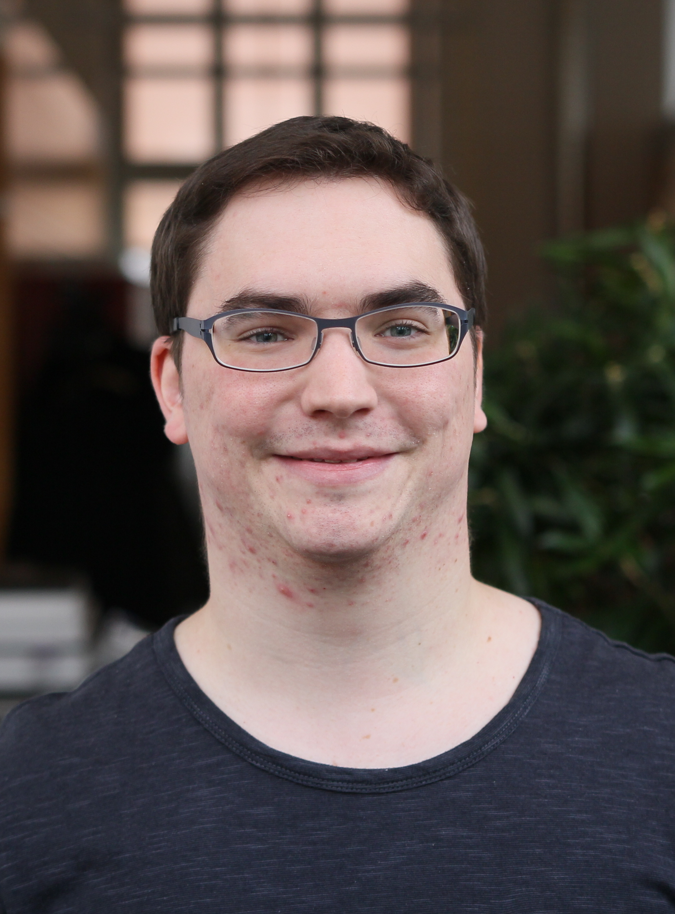

About Me

My Name is Roni Häcki
I'm a PhD student at the Systems Group at ETH Zürich under the supervision of Prof. Timothy Roscoe since December 2015. I graduated from ETH Zürich in 2015 with a MSc in Computer Science with specialisation in Distributed Systems.
I'm part of the Barrelfish team. Barrelfish is a research operating system driven by the two problems of scalability for multi- and many-core systems and heterogeneous system hardware. Barrelfish treats a single machine as a distributed system. In consequence, techniques of distributed systems can be applied.
My current key research interest is developing a network stack with predictable latency based on a systematical approach. Current state-of-the-art network stacks used in industry often experience high tail latency.
Proposed solutions in research in most cases identified the causes of tail latency using a large a mount of manual labor and trial and error. For the rapidly changing networking hardware and software around it, this approach is not a solution. A more systematical and automated approach is needed to identify causes of high tail latency and proposing solutions to these problems.
Publications
2019
Roni Haecki, Lukas Humbel, Reto Achermann, David Cock, Daniel Schwyn, Timothy Roscoe. CleanQ: a lightweight, uniform, formally specified interface for intra-machine data transfer (ArXiv) [ pdf ]
2016
Stefan Kaestle, Reto Achermann, Roni Haecki, Moritz Hoffmann, Sabela Ramons, Timothy Roscoe. Machine-aware Atomic Broadcast Trees for Multicores (OSDI 2016) [ pdf ]
Roni Häcki. Replication in Rack-scale Systems (EuroSys Doctoral Workshop 2016) [ pdf ]
Education
BSc Computer Science, ETH Zürich (2010-2013)
Roni Häcki. Dedicating NIC hardware queues to applications on the Barrelfish OS. Bachelors's thesis, ETH Zürich, September 2013
[ pdf ]
MSc Computer Science, ETH Zürich (2013-2015, Specialization: Distributed Systems)
Roni Häcki. Consensus on a multicore machine. Master's thesis, ETH Zürich, September 2015 [ pdf ]
Teaching
Informal Methods
Fall 2019. Formal methods are increasingly a key part of the methodological toolkit of systems programmers - those writing operating systems, databases, and distributed systems. This course is about how to apply concepts, techniques, and principles from formal methods to such software systems, and how to get into the habit of thinking formally about systems design even when writing low-level C code.[ course site ][ course catalogue ]
Computer Systems
Fall 2018. This course is about real computer systems, and the principles on which they are designed and built. We cover both modern OSes and the large-scale distributed systems that power today's online services. We illustrate the ideas with real-world examples, but emphasize common theoretical results, practical tradeoffs, and design principles that apply across many different scales and technologies. [ course site ][ course catalogue ]
Application-Oriented Programming with Python
Spring 2019 and Spring 2018. This course provides important basic concepts for interdisciplinary programming projects. The programming language is Python and Matlab. [ course site ][ course catalogue ]
Anwendungsnahes Programmieren mit MATLAB
Spring 2017. Die Veranstaltung "Anwendungsnahes Programmieren mit MATLAB" vermittelt Basiswissen über die imperative Programmierung. Zusätzlich wird die Kompetenz vermittelt, dieses Wissen in Modellierungsaufgaben einzusetzen. [ course catalogue ]
Systems Porgraming and Computer Architecture
Fall 2016 and Fall 2017. Introduction to computer architecture and system programming:Instruction sets,
storage hiearchies, runtime structures with an emphasis on computers as engines for the execution of compiled
programs. Interaction between system software and the hardware. Problems that arise from the final
respresentation, performance measurement and tuning, and program portability issues are covered. [ course site ][ course catalogue ]
Parallel Programming
Spring 2016. Introduction to parallel programming: deterministic and non-deterministic programs, models for parallel computation, synchronization, communication, and fairness. [ course site ][ course catalogue ]